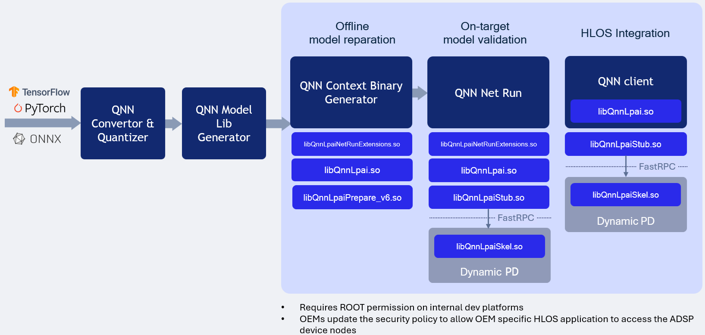

QNN LPAI ARM Backend Type¶
LPAI ARM Backend Type Execution

Running the LPAI Backend on an Android device via an ARM target is supported exclusively for offline-prepared graphs. This tutorial outlines the process of preparing the graph on an x86 host and subsequently transferring the serialized context binary to the device’s LPAI Backend for execution.
To ensure compatibility with a specific target platform, it is essential to use libraries compiled for that particular target. Examples are provided below. The QNN_TARGET_ARCH variable can be utilized to specify the appropriate library for the target.
Setting Environment Variables on x86 Linux¶
# Example for Android targets (Not all targets are supported for Android)
$ export QNN_TARGET_ARCH=aarch64-android
# Example for LE Linux targets (If applicable)
$ export QNN_TARGET_ARCH=aarch64-oe-linux-gcc<your version>
# Example for QNX targets (If applicable)
$ export QNN_TARGET_ARCH=aarch64-qnx800
# For LPAI v6 HW version
$ export HW_VER=v6
Prepare config.json file¶
{
"backend_extensions": {
"shared_library_path": "/data/local/tmp/LPAI/libQnnLpaiNetRunExtensions.so",
"config_file_path": "./lpaiParams.conf"
}
}
Note
To run the LPAI backend on an Android device, the following requirements must be fulfilled:
${QNN_SDK_ROOT}/lib/lpai-${HW_VER}/unsigned/libQnnLpaiSkel.sohas to be signed by clientqnn-net-runto be executed with root permissions
Create test directory on the device¶
$ adb shell mkdir -p /data/local/tmp/LPAI/adsp
Push the quantized model to the device¶
$ adb push ./output/qnn_model_8bit_quantized.serialized.bin /data/local/tmp/LPAI
Push the input data and input lists to the device¶
$ adb push ${QNN_SDK_ROOT}/examples/QNN/converter/models/input_data_float /data/local/tmp/LPAI
$ adb push ${QNN_SDK_ROOT}/examples/QNN/converter/models/input_list_float.txt /data/local/tmp/LPAI
Push the qnn-net-run tool¶
$ adb push ${QNN_SDK_ROOT}/bin/aarch64-android/qnn-net-run /data/local/tmp/LPAI
Set up the environment on the device¶
$ adb shell
$ cd /data/local/tmp/LPAI
$ export LD_LIBRARY_PATH=/data/local/tmp/LPAI:/data/local/tmp/LPAI/adsp
$ export ADSP_LIBRARY_PATH="/data/local/tmp/LPAI/adsp"
Execute the LPAI model using qnn-net-run¶
$ ./qnn-net-run --backend ./libQnnLpai.so --device_options device_id:0 --retrieve_context ./qnn_model_8bit_quantized.serialized.bin --input_list ./input_list_float.txt